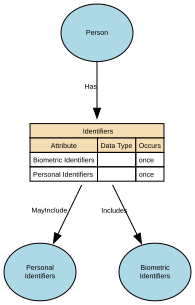

Identifiers
Unique references that distinguish one Natural Person from all others within a given context, system, or jurisdiction. They are assigned by an authority (e.g., a government, organisation, or system) for the purpose of uniquely recognising, managing, or relating to that person across processes and datasets.
Identifiers are not the person, and they are not personal attributes (like name, gender, or date of birth). They are tokens that point to the person.
Implements Concepts from Person Domain, Concept Model
| Concept | Description |
|---|---|
| Identifiers | Unique references that distinguish one Natural Person from all others within a given context, system, or jurisdiction. They are assigned by an authority (e.g., a government, organisation, or system) for the purpose of uniquely recognising, managing, or relating to that person across processes and datasets. Identifiers are not the person, and they are not personal attributes (like name, gender, or date of birth). They are tokens that point to the person. |

Attributes
| Attribute | Description | Data type | Occurs |
|---|---|---|---|
| Biometric Identifiers | structure | once | |
| Personal Identifiers | Reference numbers | structure | once |